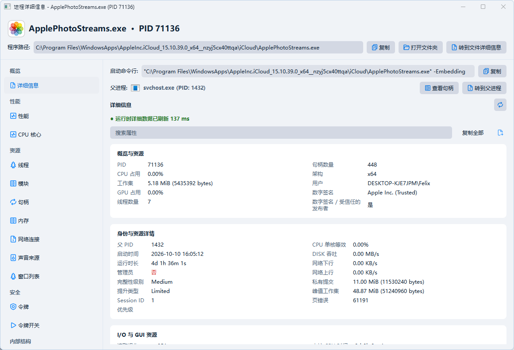

HVM / DMA Cross-View
普通读取、驱动读取、HVM 私有页表和 DDMA 读取逐页互比，多轮检查差异。HVM 用来排查读取函数被 Hook，DDMA 用来排查 CPU 侧的内存重定向。
KSword 5.1 · Windows x64
支持 HVM / DMA 级别的 cross-view，排查内存读取 Hook 和 EPT/SLAT 重定向。还有隐藏进程与线程检查、内核回调监控，以及 CE / x64dbg 的 R0 / R-1 调试。

进程入口指令、地址与跳转关系。
PDB 结构目录中的字段偏移、类型与位域。
模块路径、数字签名、入口偏移与运行状态。
读取进程内存，在字节视图与数值解析器中查看同一快照。
区域地址、大小、提交状态、类型与页面保护。
映像基址、入口 RVA、节区大小、熵与属性。
PDB 字段目录：映像、加载器与进程参数的结构布局。
令牌结构的字段偏移、权限位图与 SID 相关类型。
CPU 总占用与单核等效占用的采样历史。
KernelCallbackTable：函数地址、所属模块、偏移与保护属性。
对象目录、类型、路径、NTSTATUS 与所选对象属性。
644 条链接的完整路径、目标对象、DOS 候选路径与查询状态。
1,206 个 Atom 的数值、十六进制编号、名称与来源。
普通读取、驱动读取、HVM 私有页表和 DDMA 读取逐页互比，多轮检查差异。HVM 用来排查读取函数被 Hook，DDMA 用来排查 CPU 侧的内存重定向。
把进程链表、CID 等来源放在一起核对，找出只在某个来源出现的进程、孤儿线程和异常入口。
查进程、线程、注册表、Ob、Minifilter 等回调，也能看 SSDT、IDT、内核对象和函数指针，结合 PDB 定位到模块与符号。
区分句柄占用和映射占用，定位到底是哪个进程在用文件。另有 R0 文件操作、原始磁盘和文件系统分析。
核对 TCP/UDP 连接和所属进程，查端口占用、抓包。窗口检查同时支持 Win32 和 UIA 控件树。
看调用参数、返回值和调用栈，把 API、ETW 和 Syscall 记录对应到目标进程，支持筛选和导出。
让 AI 客户端直接读表格、切页面、操作控件，也能调用 CLI。重复查询、批量导出可以写成脚本。
支持 Intel VT-x / EPT、影子页和执行断点，CE / x64dbg 可以接同一套调试后端。AMD SVM / NPT 还在实验阶段。
不依赖 Qt6，原生 Win32 界面，启动快。保留进程详情、跨页面跳转、快照比较和 JSON / TSV 导出。
Qt6 页面，美观且功能最完整。
原生 Win32 界面，绕过 Qt6 的兼容范围，秒开。
命令行自动化，方便 AI 客户端接入。
KSword 社区源码可见许可证 v1.6